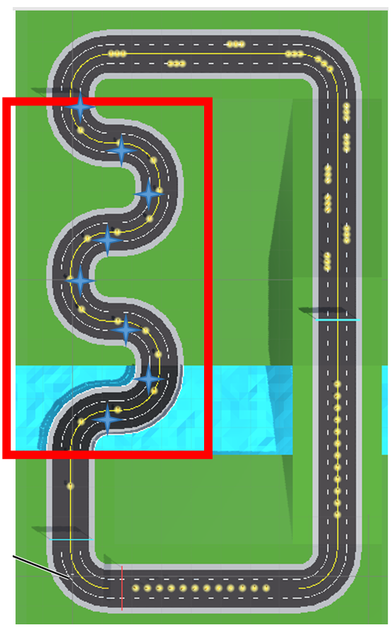
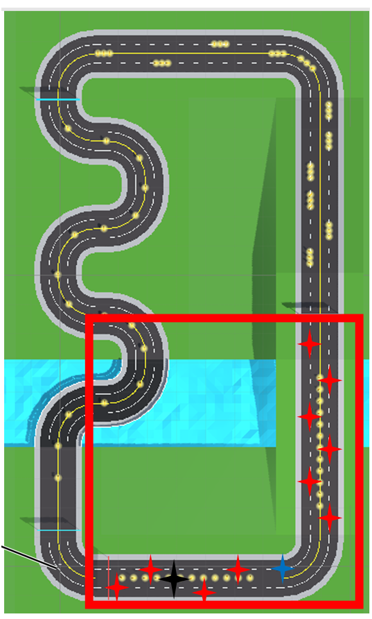

Lecture Homework 2: Locomotion Pitch
Introduction
This blog introduces my locomotion technique idea which is called Rhythmic Skateboarding. It introduces a VR locomotion method that combines rhythm, spatial markers, and embodied interaction to create an engaging movement experience while reducing motion sickness.
1. Core Mechanism
The core idea of Rhythmic Skateboarding is to turn locomotion into an active, rhythm-driven process rather than a passive one.
Key principles include:
- The user always moves forward along the center of the route
- Movement speed gradually decreases if the user takes no action
- Multiple markers are placed along the path
- When the user enters a marker’s effective range and performs the corresponding action:
- Speed increases
- Additional effects may be triggered, such as steering, jumping, or body tilting
This design encourages continuous engagement and makes movement feel intentional and skill-based.
2. Starting Area
The starting area introduces the most basic interaction mechanics and helps users learn the system with minimal cognitive load.
Marker Layout
- Basic markers are placed alternately on the left and right sides of the path
Function
- Used only to increase speed
- No steering or complex actions involved
Design Purpose
- Smooth onboarding for first-time users
- Establishes a clear feedback loop: see marker → interact → speed up

3. Continuous Curves
When the path begins to curve, a new type of marker is introduced to handle steering.
Turning Markers
- Placed at corners and curved sections of the path
- Users must turn their heads to reorient themselves and bring the marker into view
Function
- Controls steering direction
- Also increases movement speed
Benefits
- Uses natural head movement instead of thumbsticks
- Reduces sudden rotational motion, helping to minimize VR motion sickness

4. Zig-zagging Uphill Sections
Uphill areas present a greater challenge and require additional support through marker placement.
Design Features
- Markers are placed more densely on uphill paths
- Helps users maintain momentum while climbing
Tilting Markers
- Trigger body tilting of the avatar
- Allow users to:
- Collect coins placed on the sides of the path
- Gain additional speed
Experience Impact
- Enhances embodiment and physical involvement
- Makes uphill traversal feel dynamic rather than slow or frustrating

5. Final Sprint
The final section combines all previously introduced mechanics into a high-energy climax.
Jumping Markers
- Enable the user to jump
- Used for:
- Collecting coins above ground
- Achieving a strong speed boost
Additional Marker Use
- Alternating basic markers along straight sections
- Turning markers at corners
Goal
- Encourage mastery of all movement mechanics
- Deliver a satisfying and rhythmic end-of-level experience

6. Conclusion
Rhythmic Skateboarding rethinks VR locomotion by focusing on:
- Rhythm-based interaction
- Continuous user engagement
- Body-driven steering, jumping, and tilting
Rather than simply moving the player through space, this technique:
- Uses markers to create a sense of flow
- Rewards attention and timing
- Reduces discomfort by avoiding abrupt motion
It is especially well-suited for:
- VR skating, racing, or parkour experiences
- Projects aiming to balance immersion and comfort
Feedback
Too simple, so I changed the idea, see Final Presentation
You can find the slides in the following address: Locomotion Pitch